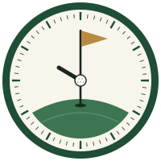

Fairway & Dials
Golf clubs · Timepieces
Hand-picked pre-owned clubs and mechanical watches, for people who play on Saturday and wear something mechanical doing it. Opening soon.

Golf clubs · Timepieces
Hand-picked pre-owned clubs and mechanical watches, for people who play on Saturday and wear something mechanical doing it. Opening soon.